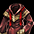

ブラックファイヤー遺物
2019/12/12アップデートにて性能に変更が入りました。
最新の情報はこちら
首兜
冠
イヤリング
マント
ベルト
グローブ
鎧
足
2転700Lv～のキャラクターのみブラックファイヤー外郭のホーク (8.100)にて、異界の清水300個と遺物アイテムを交換できる。
異界の清水300個はブラックファイヤー装備をホークに渡すことで入手することも可能。
ブラックファイヤー装備と異なり、錬成可能だが、アイテム強化の方法が特殊。
異界の清水を使って段階をアップさせることで性能を開放していきます。(1段階:50個、2段階:100個、3段階:150個)
通常のBF装備とは異なり錬成、開放(異界の清水が必要)が3段階で可能。
錬成時に解放されるスロットの数は通常の錬成と同様に0～4個です。
失敗時のアイテム消滅もありません。錬成開放失敗時も既存の開放箇所はそのまま残ります。
古い遺物用のふいごを使うことで各種成功確率の上昇、および錬成時のスロット解放数を増加させられます。

オプション称号付与は異界の清水を使ってランダムに付与させることで3OPまで行えます。
BF強化不可。


| [遺物]シックスの狂気 | [遺物]シックスの狂気[Nx] | ||||||||||
|---|---|---|---|---|---|---|---|---|---|---|---|
|  |
<基本情報> 取引不可アイテム 装備数制限( 1/1 ) 防御力 +61 ストレンジ戦闘時、防御力強化 +15％ 基本能力値を15％ほど上げる。 防御力 +145％ 知識 +1/レベル 3 知恵 +1/レベル 4 スキルレベル +5 減少限界CP +50 最大CP +150％ 錬成 可能 |
<基本情報> 取引不可アイテム 装備数制限( 1/1 ) 防御力 +61 ストレンジ戦闘時、防御力強化 +15％ 基本能力値を15％ほど上げる。 防御力 +145％ 知識 +1/レベル 3 知恵 +1/レベル 4 スキルレベル +5 減少限界CP +50 最大CP +150％ <錬成 オプション 情報> 防御力 +130％ 防御力 +60 ダブルクリティカルダメージ 12％ 増加 能力低下防止 3％増加 |
|||||||||
|
<要求能力値> レベル 800 健康 300 知恵 100 知識 200 |
<着用可能な職業> - |
<要求能力値> レベル 800 健康 300 知恵 100 知識 200 |
<着用可能な職業> - |
||||||||
|
<説明>
魔女か、賢者か。シックスは、一般的にレリロープ連盟建国の一等功臣として知られている。しかしその一方で、魔法大戦の元凶ともいわれている。いずれにしても、シックスが魔法を行使するときは、狂気に溢れ、まわりの人々まで狂わせるほどの魔力だったそうだ。 ※ ブラックファイヤーユニークは、部位を問わず一つのみ装着可能です。 ※ 遺物アイテムはドロップできません。 |
|||||||||||